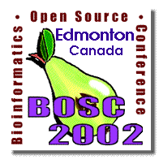
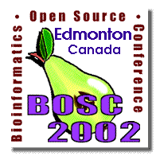

| (O|B|F) ··· BIOPERL · BIOJAVA · BIOPYTHON · BIOCORBA · BIOXML | ( Community link · BIOINFORMATICS.ORG) |
 

Key dates:
BOSC2002 CONFERENCE SCHEDULEBOSC2002 Presentation Slides
Pre-registration for BOSC2002 has ended. Limited on-site registration available.
|
The third Bioinformatics Open Source Conference, BOSC 2002, will take place in Edmonton, Canada,
on August 1-2, just before ISMB 2002.
BOSC 2000, convened in August, 2000, in San Diego
and featured keynote talks
by Ewan Birney, Lincoln Stein, and Tim O'Reilly.
BOSC 2001 was held in Copenhagen on July 19-20, 2001,
concurrently with the BioPathways meeting and
just before ISMB 2001,
BOSC 2002 will be organized around
existing open source
bioinformatics projects, providing time for projects to meet personally
and also to exchange ideas between projects.
The mornings will feature keynote talks and technical talks
selected from submitted abstracts.
In the evenings, BoFs will bring together
groups with specialized interests in particular projects.
Like last year's meeting, BOSC 2002 will include "Lightning Talks"--short
talks that allow researchers to present a quick introduction to their work, so that interested parties
can meet later to discuss it in more detail, perhaps at the evening BoFs.
Keynote speakers will include:
Join the BOSC mailing list
Visit the ISMB2002 site for information on hotels, travel to Edmonton, and other relevant information. |